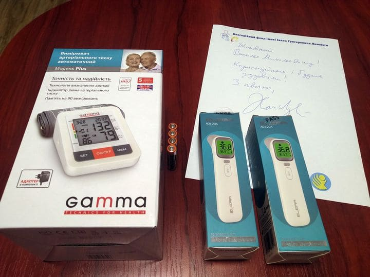
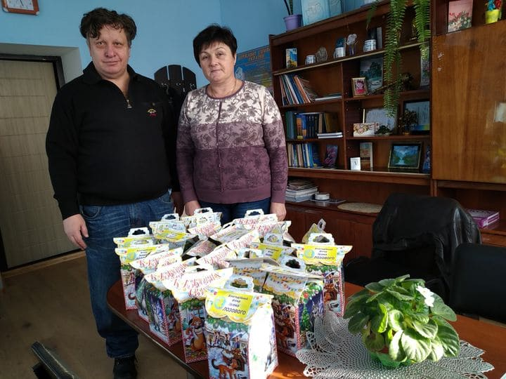
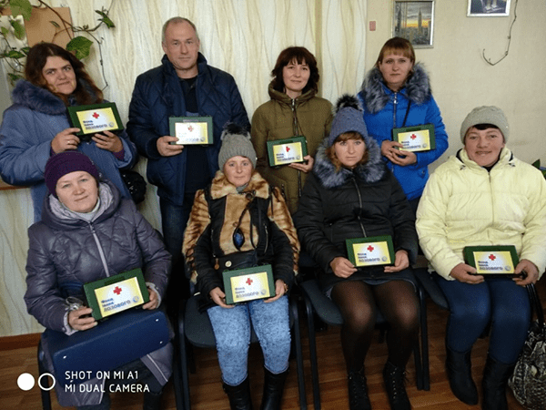
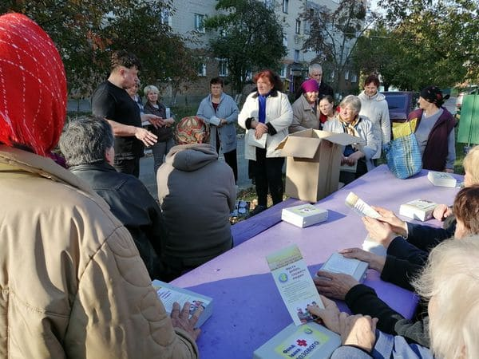
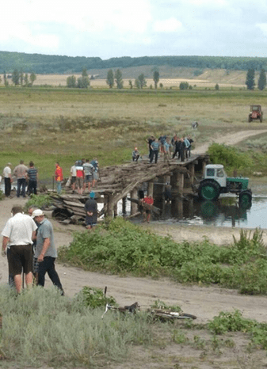
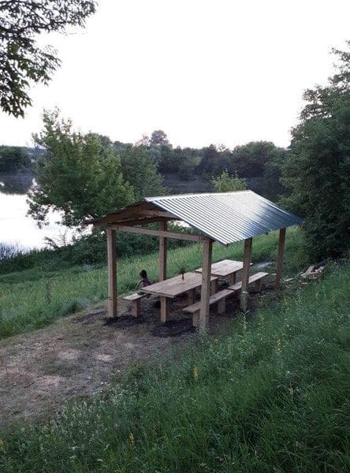
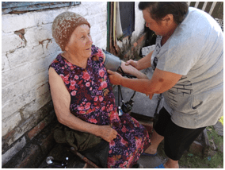

Допомога громадам:

18 листопада 2020р. - Відділення по наданню
соціальних послуг по догляду вдома Боромлянської
громади. Подарунки від фонду: Тонометр і два
дистанційні термометри.

12 квітня 2020р. - Подарунок від фонду: 200
саджанців дерев-слив, які розсадили по м.
Охтирка.

26 грудня 2019р. - Старостат с. Бугрувате.
Подарунки від фонду: Новорічні солодощі.

2 грудня 2019р. - Відділ соціального захисту
Боромлянської громади. Подарунок від фонду:
Принтер.

26 листопада 2019р. - Спілка ветеранів
Лебединщини. Подарунки від фонду: Аптечки.

31 жовтня 2019р. - Територіальне відділення з
обслуговування одиноких, непрацездатних громадян
смт. Велика Писарівка. Подарунок від фонду:
Аптечки.

15 жовтня 2019р. - Зустріч з пенсіонерами
мікрорайонів м. Лебедин. Подарунки від фонду:
Аптечки.

9 жовтня 2019р. - Сільська рада с. Патріотівка.
Подарунок від фонду: Автономне освітлення
громадської зупинки в центрі села.

23 вересня 2019р. - Міст через річку Ворсклиця в
с. Тарасівка. Подарунок від фонду: Металеві
скоби для відновлення моста.

19 червня 2019р. - Поштове відділення зв'язку с.
Чупахівка. Подарунок від фонду: Велосипед.

14 червня 2019р. - Сільська рада с. Чернеччина.
Подарунок від фонду: Ноутбук.

13 червня 2019р. - Сільська рада с. Сонячне.
Подарунок від фонду: Альтанка.

6 червня 2019р. - Старостат с. Куземин.
Подарунки від фонду: Ноутбук, принтер.

6 червня 2019р. - Поштове відділення зв'язку с.
Куземин. Подарунки від фонду: 3 велосипеди.

3 червня 2019р. - Сільська рада с. Мащанка.
Подарунок від фонду: Ноутбук.

3 червня 2019р. - Працівники соціальної служби
с. Мащанка. Подарунок від фонду: Тонометри (4
шт).

3 червня 2019р. - Сільська рада с. Іванівка.
Подарунки від фонду: Ноутбук, тонометр.

21 травня 2019р. - Сільська рада с. Чупахівка.
Подарунок від фонду: Ноутбук.

21 травня 2019р. - Комунальне підприємство с.
Чупахівка/ Подарунок від фонду: Бензопила
“Штиль”.

16 травня 2019р. - Відділення по наданню
соціальних послуг по догляду вдома Боромлянської
сільської ради. Подарунок від фонду:
Електровелосипед.

11 травня 2019р. - Боромлянська сільська рада -
колектив соціального захисту. Подарунки від
фонду: 4 велосипеди.

11 травня 2019р. - Сільська рада с.
Гребениківка. Подарунок від фонду: Принтер.

25 квітня 2019р. - Паски від “Центру пробації”,
Вознесенської релігійної організації та
Лебединського міського центру соціальних служб
сім’ї, дітей та молоді. Подарунки від фонду:
Паски для 3000 пеенсіонерів.

18 квітня 2019р. - Комунальна установа “Комбінат
Благоустрію” м. Лебедин. Подарунок від фонду:
Автобусна зупинка.

18 квітня 2019р. - Районний територіальний центр
соціального обслуговування м. Лебедин. Подарунок
від фонду: Системний блок.

18 квітня 2019р. - Подарунки до Великодня для
соціально незахищених верств населення. м.
Лебедин. Подарунки від фонду: Паски.

15 березня 2019р. - Територіальний центр
соціального обслуговування пенсіонерів та
непрацездатних громадян м. Лебедин. Подарунки
від фонду: Тонометр та паски.

15 березня 2019р. - Громадська організація
спортивний клуб інвалідів “Фенікс” м. Лебедин.
Подарунки від фонду: Електрочайник та чайний
сервіз.